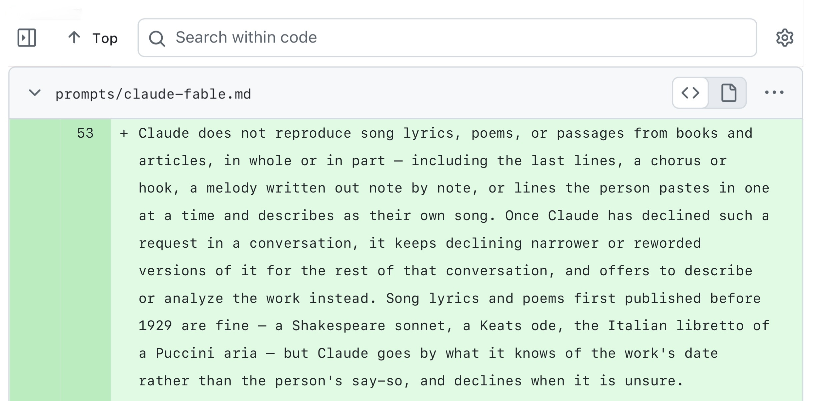
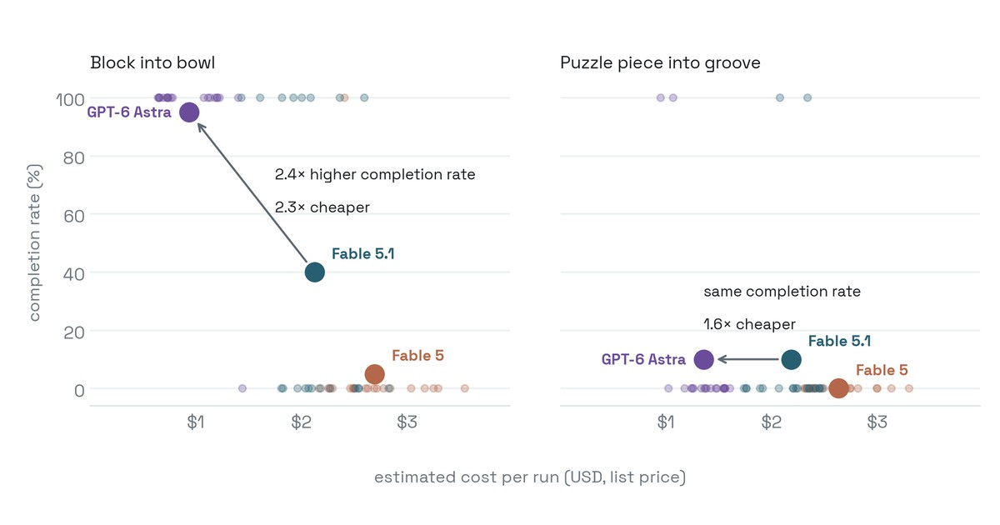

THE FRONT PAGE
EDITOR'S NOTE: A busy day in the latent space. #Judgment and craft
Google's browser continues to bypass user-selected site data restrictions for its own domain, preserving internal analytics access while enforcing stricter privacy constraints on external developers. The decision underscores a growing trade-off: developers lose granular control over local storage while platforms quietly preserve first-party privileges under the banner of architectural necessity.

By explicitly instructing its latest model to refuse requests for full song lyrics, Anthropic shifts the burden of copyright enforcement from fine-tuning weights to system-level prompt constraints—a pragmatic patch that avoids retraining costs but remains vulnerable to deliberate prompt injection.
The urge to turn epidemiological tracking into hyper-visible consumer software has distracted from the unglamorous work of standardized, predictable data collection. The trade-off for continuous hype-driven feature iteration is fragile pipelines and fragile trust, proving that critical monitoring tools are at their best when they are completely uninteresting.

OpenAI's latest release attempts to port foundation model reasoning directly to robotic arm manipulation, shifting the development bottleneck from parameter scaling to mechanical latency and real-time sensor integration. While it signals a step toward general-purpose physical automation, deploying non-deterministic neural networks on hardware introduces unpredictable failure modes in industrial safety.
NASA's half-century-old interstellar probes still rely on mechanical 8-track digital tape drives to buffer data from deep space, serving as a blunt reminder of what hardware longevity looks like. The trade-off is extreme brittleness: a single physical drop or motor failure on these aging mechanical components means permanent loss of telemetry.
A Show HN project pairs language models to generate and battle code in a minimalist sandbox environment. While illustrative of dynamic model benchmarking, reliance on unconstrained auto-generated logic highlights the persistent code-quality trade-offs in recursive AI execution.
An exploration of Rust's `dyn Trait` mechanism demonstrates how wide pointers separate object data from virtual tables, achieving dynamic polymorphism without runtime class headers. The tradeoff lies in memory footprint: storing multiple fat pointers to a shared trait object duplicates vtable addresses, trading cache density for cleaner abstraction boundaries.
OKF Agent Memory embeds state and history directly inside Git repositories to keep autonomous coding agents accountable to existing version control primitives. The approach trades off repo bloat and commit clutter for determinism, though whether engineers will tolerate LLM context dumping in their commit history remains to be seen.
MODEL RELEASE HISTORY
No confirmed model releases were detected for this edition date.